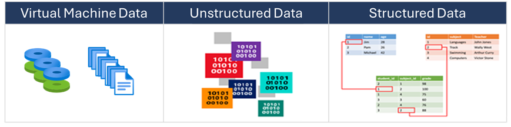

Azure Storage is Microsoft's cloud storage solution for modern data storage scenarios. Azure Storage offers a massively scalable object store for data objects. It provides a file system service for the cloud, a messaging store for reliable messaging, and a NoSQL store.
Azure Storage is an AI-ready service that you can use to store files, messages, tables, and other types of information. You use Azure Storage for applications like file shares. Developers use Azure Storage for working data. Working data includes websites, mobile apps, and desktop applications. Azure Storage is also used by IaaS virtual machines, and PaaS cloud services.
Things to know about Azure Storage
You can think of Azure Storage as supporting three categories of data: structured data, unstructured data, and virtual machine data. Review the following categories and think about which types of storage are used in your organization.

| Category | Description | Storage examples |
|---|---|---|
| Virtual machine data | Virtual machine data storage includes disks and files. Disks are persistent block storage for Azure IaaS virtual machines. Files are fully managed file shares in the cloud. | Storage for virtual machine data is provided through Azure managed disks. Data disks are used by virtual machines to store data like database files, website static content, or custom application code. The number of data disks you can add depends on the virtual machine size. |
| Unstructured data | Unstructured data is the least organized. The format of unstructured data is referred to as nonrelational . | Unstructured data can be stored by using Azure Blob Storage and Azure Data Lake Storage. Blob Storage is a highly scalable, REST-based cloud object store. Azure Data Lake Storage is the Hadoop Distributed File System (HDFS) as a service. |
| Structured data | Structured data is stored in a relational format that has a shared schema. Structured data is often contained in a database table with rows, columns, and keys. Tables are an autoscaling NoSQL store. | Structured data can be stored by using Azure Table Storage, Azure Cosmos DB, and Azure SQL Database. Azure Cosmos DB is a globally distributed database service. Azure SQL Database is a fully managed database-as-a-service built on SQL. |
Things to consider when using Azure Storage
As you think about your configuration plan for Azure Storage, consider these prominent features.
-
Consider durability and availability . Azure Storage is durable and highly available. Redundancy ensures your data is safe during transient hardware failures. You replicate data across datacenters or geographical regions for protection from local catastrophe or natural disaster. Replicated data remains highly available during an unexpected outage.
-
Consider secure access . Azure Storage encrypts all data. Azure Storage provides you with fine-grained control over who has access to your data.
-
Consider scalability . Azure Storage is designed to be massively scalable to meet the data storage and performance needs of modern applications.
-
Consider manageability . Microsoft Azure handles hardware maintenance, updates, and critical issues for you.
-
Consider data accessibility . Data in Azure Storage is accessible from anywhere in the world over HTTP or HTTPS. Microsoft provides SDKs for Azure Storage in various languages. You can use .NET, Java, Node.js, Python, PHP, Ruby, Go, and the REST API. Azure Storage supports scripting in Azure PowerShell or the Azure CLI. The Azure portal and Azure Storage Explorer offer easy visual solutions for working with your data.